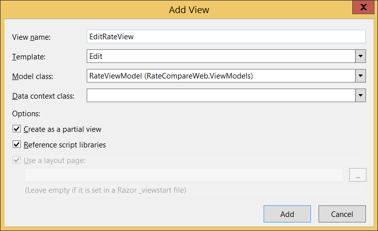
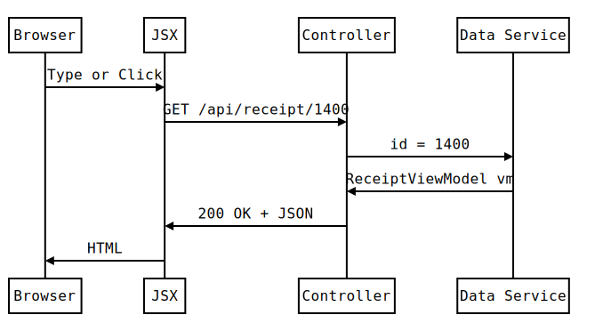
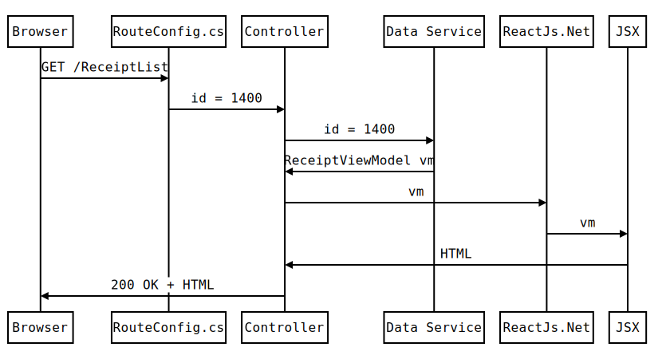
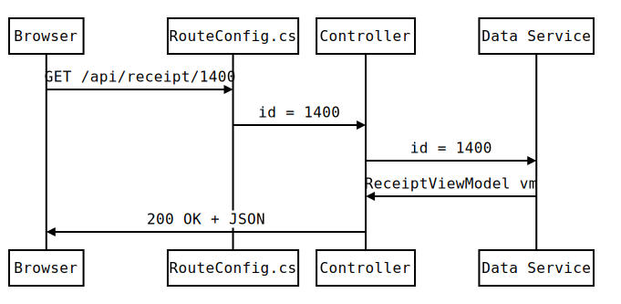

# Make Cool Things Quickly ## with ASP.Net MVC and ReactJs.Net .small[ Presented by [Edward Delaporte](mailto:edward.delaporte@busey.com) and [Zach Carrington](mailto:zach.carrington@busey.com) for [Busey Bank](https://www.busey.com) at [University of Illinois WebCon](http://webcon.illinois.edu/) on April 28, 2016. ] This slide deck is online at http://edward.delaporte.us ??? Get out your lasert pointer. Test it. Edward - Writing Web Application Solutions since 2000. - My Career: ASP, ASP.Net (1), PHP, Perl CGI, Python WSGI, React.js, ASP.Net MVC (4.5). Zach - IT Professional since 2010. - When I started, Zach answered all of my "How do I do X in ASP.Net MVC 4.5?" questions for me. - We hope this presentation will do that for you. - Here to answer your questions honestly in case I lie to you. --- # Why this presentation, why today? ### Microsoft Recently open sourced [much](https://github.com/aspnet) of ASP.Net ### React.Js was the [newest framework ever](http://www.isaacchansky.me/days-since-last-new-js-framework/), when it released. ### Unobtrusive Validation is amazing. ??? - 5 pages of repositories... - Find out days since last JavaScript framework. 10 is the highest I have seen. - ASP.Net is Active Server Pages (As opposed to static.) - ASP.Net is now Open Source and runs, in theory, everywhere. - React.JS - Introduces several valuable patterns to client JavaScript. - Integrates well with plain old JavaScript. - Spoiler: We just finished removing React.js from our biggest product. - We will show you how to get many of the benefits of React.js without using React.js - Unobtrusive - Unobtrusive Validation is the best thing to happen to JavaScript in a while. - It deserves to be part of the HTML5 specification. - It will work with Ruby on Rails, PHP, Python/Django, Perl CGI, and anything that can serve a website. ??? Lessons I learned: - MVC is great. - Razor (part of MVC) with React.js is nice. - Razor without React.js is better. - Our sweet spot turned out to be using ideas from React.js without using React.js ??? # About ASP.Net - Made by Microsoft - Much of ASP.Net is Open Source -- The Project list is five pages long on GitHub! - Server side - ASP code is typically C# or Visual Basic.Net - If you don't have a preference, use C# to Avoids mixing ; and non-; --- # About Model View Controller (MVC) - Web framework for ASP.Net - Released by Microsoft under the Apache 2.0 License - MVC is made up of: - Models (connects to your database typically using [Entity Framework](http://www.asp.net/entity-framework)) - ViewModels (simple class objects) - Views (using [Razor](https://github.com/aspnet/Razor) to render HTML) - Controllers (tie everything together) <img class='stretch little' src='static/img/gallery/abstract_ipad/11 6-48-14 PM.jpg'/> ??? # Poll: Who has heard the term MVC? - Skip ahead if most hands raise. # About MVC - MVC is somewhat new, and pretty great. - Fast way to do CRUD - Create/Read/Update/Destroy. - Sometimes MVVC (Model ViewModel View Controller) - In theory, everything you see here will run on an Apache server. - Possible follow up presentation: "I built a Microsoft App on Linux..." --- # Comparisons for Model View Controller - MVC is to Asp.Net as: - Ruby to Rails - Django to Python - Razor is to ASP.Net as: - ASP Web Forms are to ASP.Net - Django Views are to Python - Jinja is to Python - JSP is to Java - Entity Framework is to ASP.Net as: - dbi is to Perl - SQLAlchemy is to Python - DjangoORM is to Python ??? - But ASP.Net MVC is terrific for beginners and veterans. # Stuff I will Gloss over - Jargon as Landmarks - if you don't recognize something, do not fret. - You need a view rendering engine. Razor is one. - This presenation is not about Razor - This presentation will have Razor code. - Entity Framework is a database connector. - Entity Framework is fine, but this presentation is only 50 minutes long. --- # About React.js ### Released as [open source](https://facebook.github.io/react/) by Facebook ### Renders a markup language called JSX into HTML client side ### ReactJS.Net integrates React.js with ASP.Net MVC ??? # About React.js - Works with any server side technology - Primarily for writing Single Page Applications. - Alternate talk: Do Cool Things Slowly with ASP.Net MVC and Angular.js # ReactJs.Net - Includes server side pre-compilation of React client side templates --- # GET example.com/Payments/Single ``` Request URL: https://example.com/Payments/Single Request Method:GET Status Code:200 OK Remote Address:10.55.36.184:8080 <html> <p>Hello World!</p> </html> ``` <img class='stretch little' src='static/img/gallery/abstract_ipad/11 8-56-49 PM.jpg'/> ??? - Reminder that everything is text. - You may do this lots of times for each page. - Laser: Returned HTML and status code 200 OK - Laser: Payments/Single --- # Bouncing Dot Tour of MVC <img class='flow' src="static/img/webcon2016/mvc.svg" /> ??? Do Laser Pointer Walkthrough - Introduce each box. - Real code goes above the Controller, outside this diagram. - Unit test only code that does not fit on this diagram. (Panic text) 1. User does something in the browser. 2. GET or POST Request is sent. 3. RouteConfig.cs decides which controller to pass the request to. 4. Controller verifies the request. 4. Controller applies business rules. 4. Controller requests data from Data Service 4. Controller makes and populates a ViewModel instance. 4. Controller passes the populated ViewModel to it's favorite Razor View. 4. Razor View renders the data from the ViewModel as HTML - Keep controllers light by building code separate testable logic modules. --- # Bad RouteConfig.cs The MVC template comes with a 'RouteConfig.cs' like this: .small[ ```CSharp public class RouteConfig { public static void RegisterRoutes(RouteCollection routes) { routes.MapRoute( name: "Default", url: "{controller}/{action}/{id}", // <-- This sucks. ); } } ``` ] *** .small[ ```CSharp public class PaymentsController : Controller { [HttpGet] public ActionResult Single() { /// ... Omitted ... } } ``` ] ??? - By default, URLS are determined by controller class names. This sucks. - Great code changes often. - "Cool URIs don't change." (Tim Berner's Lee, _Weaving the Web_, 1999) Easter Egg Bonus for those following along: Online article: [W3.org Style Guide - Cool URIs don't change](https://www.w3.org/Provider/Style/URI.html) --- # Good RouteConfig.cs Use this instead: .small[ ```CSharp public class RouteConfig { public static void RegisterRoutes(RouteCollection routes) { routes.MapMvcAttributeRoutes(); } } ``` ] *** .small[ ```CSharp public class SensibleNameController : Controller { [HttpGet] [Route("Payments/Single")] // <-- This sucks less! public ActionResult SensibleName() { /// ... Omitted ... } } ``` ] ??? - Change controller name without changing URL. - Change URL without renaming controller. - Bonus - Keep your sanity by keeping your routes next to your controllers. --- # Trivial Controller Method <img class='flow' src="static/img/webcon2016/mvc.svg" /> ??? - Laser Pointer: Controller - You are Here --- # Trivial Controller Method ```CSharp public ActionResult Contact() { ViewBag.Message = "Your contact page."; return View(); } ``` # Typical Controller Method ```CSharp [HttpGet] [AllowAnonymous] [Route("/Property/{id}")] public ActionResult FindProperty(int id) { PropertyViewModel viewModel = DataService.GetPropertyById(id); viewModel.SecretTunnel = LogicModule.GetSecrets(viewModel); ViewBag.IsTacoTuesday = LogicModule.IsTacoTuesday(); return View(viewModel); } ``` ??? # Tips - Notice that data and logic, if needed, go here. - Keeping controller code simple makes writing unit tests of your logic easier. - ViewBag lets you pass data that does not belong in your ViewModel. - Whether today is Taco Tuesday has nothing to do with the selected Property Address. - Do not use the special API controllers, they are going away. --- # Trivial ViewModel <img class='flow' src="static/img/webcon2016/mvc.svg" /> ??? - Laser ViewModel b/w Data Service and Controller - You are here. --- # Trivial ViewModel ```CSharp namespace RateCompareWeb.ViewModels { public class RateViewModel { public string Provider { get; set; } public decimal? Rate { get; set; } public decimal EstimatedValue { get; set; } public decimal OurAdvantage { get; set; } } } ``` ??? - Just a class object with some attributes - Sometimes use separate ViewModels for Add/Edit/List - Fields may be input/output or calculated --- # Typical ViewModel ```CSharp namespace RateCompareWeb.ViewModels { public class RateViewModel { public string Provider { get; set; } [Display(Name = "Rate")] public decimal? RateAPY { get; set; } [Display(Name = "Estimated Value")] [DataType(DataType.Currency)] [DisplayFormat(DataFormatString = "{0:C}", ApplyFormatInEditMode = true)] public decimal EstimatedValue { get; set; } [Display(Name = "Our Advantage")] [DataType(DataType.Currency)] [DisplayFormat(DataFormatString = "{0:C}", ApplyFormatInEditMode = true)] public decimal OurAdvantage { get; set; } } } ``` ??? - Attributes customize display (label and data format) - Attributes apply to all generated views (including add/edit/list) - Other Attributes (Not Shown) add server or client validation --- # Typical ViewModel <img src='static/img/webcon2016/ratepartial.png' class=''/> ??? - Display Attributes cause labels. --- # Razor Partial View <img class='flow' src="static/img/webcon2016/mvcPartial.svg" /> ??? - Laser Pointer: You are here --- # Generate a List Partial Razor View MVC can generate a decent list table from a ViewModel. <img src='static/img/webcon2016/addview.png' class='left'/> ??? - This is Microsoft technology - We right-click things --- # Generate a List Partial Razor View <img src='static/img/webcon2016/addListViewModelPartial.png' class='capture left'/> ??? - Visual Studio can generate typical CRUD Razor Views from the ViewModel. --- # _PartialTable.cshtml .small[ ```CSharp @model IEnumerable<RateCompareWeb.ViewModels.RateViewModel> @{ Layout = null; } <table id="rateTable" class="table table-condensed"> <tr> <th> @Html.DisplayNameFor(model => model.Provider) </th> ... More headers ... </tr> @foreach (var item in Model) { <tr class="@( item.IsOurRate ? " our_rate":"")"> <td> @Html.DisplayFor(modelItem => item.Provider) </td> ... More Row Data ... </tr> } </table> ``` ] ??? - Layout = null tells Razor not to add Busey Logo header and copyright footer so we can include it in another page. - @ sign invokes CSharp code. - We did our data fetching and number crunching in the controller. --- # _PartialTable.cshtml  ??? - What you get looks something like this. - But you can change it now. - For example, we added CSS for Bold first row. --- # Include _PartialTable.cshtml in another page. Assuming the ratepartial is served at /Home/_RateTable, we can embed it in another page with: ```Razor <div id="rateList"> @Html.RenderAction("_RateTable", "Home") </div> ``` And then refresh it on the client side later with: ```JavaScript $.ajax({ url: "/Home/_RateTable" method: "GET", contentType: 'application/json', success: function (data, status, xhr) { $("#rateList").html(data); } }); ``` ??? - id allows jQuery to find it. - First part does the server side render. - Second part allows client side updates without reloading the entire page. --- # Razor Edit Form  ??? - Visual Studio can generate a decent Edit Partial with Bootstrap already included. --- # Razor Edit Form - Generated View Code ```CSharp @model RateCompareWeb.ViewModels.RateViewModel @using (Html.BeginForm()) { @Html.AntiForgeryToken() <div class="form-horizontal"> <h4>RateViewModel</h4> <hr /> @Html.ValidationSummary(true, "", new { @class = "text-danger" }) @Html.LabelFor(model => model.Rate, htmlAttributes: new { @class = "control-label col-md-2" }) <div class="col-md-10"> @Html.EditorFor(model => model.Rate, new { htmlAttributes = new { @class = "form-control" } }) @Html.ValidationMessageFor(model => model.Rate, "", new { @class = "text-danger" }) </div> <!-- ... More fields ... --> <div class="col-md-offset-2 col-md-10"> <input type="submit" value="Save" class="btn btn-default" /> </div> </div> } <div> @Html.ActionLink("Back to List", "Index") </div> ``` ??? About the generated Razor form - class="col-md-10" - Bootstrap responsive column hints are included by default. - ValidationSummary / ValidationMessageFor - Microsoft Unobtrusive Validation (Open Source JavaScript library for client side validation) is included by default. - LabelFor - Gets text from the Display attribute from the ViewModel. Does not presently add ARIA accessibilty markup, but you can do so by hand in the htmlAttributes. - submit - You get a normal submit buton. Unobtrusive has attached it's validation events for field.blur() and form.submit() - You may want to use AJAX to POST the form. You can. It works fine. - You can mix freeform HTML in with Razor as needed. It works fine. --- # Razor Edit Form - Resulting HTML ```HTML <form action="/" method="post" novalidate="novalidate"> <input name="__RequestVerificationToken" type="hidden" value="TLeX43jnhexgznkhND0hD8aPJPfMTKomWnp1juSDchb6AFp66AuULNMlFJKTsOovQhvDPA2pErjjh-aAIcAWznX1MVnNP-06Dx5MX6gsdno1"> <div class="form-horizontal"> <h4>Add a Rate</h4> <hr> <!-- ... More fields ... --> <div class="form-group"> <label class="control-label col-md-2" for="Rate">APY</label> <div class="col-md-10"> <input class="form-control text-box single-line input-validation-error" data-val="true" data-val-number="The field APY must be a number." id="Rate" name="Rate" type="text" value=""> <span class="text-danger field-validation-error" data-valmsg-for="Rate" data-valmsg-replace="true"><span for="Rate" class="">The field APY must be a number.</span></span> </div> </div> <div class="form-group"> <div class="col-md-offset-2 col-md-10"> <input type="submit" value="Save" class="btn btn-default"> </div> </div> </div> </form> <script src="/Scripts/jquery-1.10.2.js"></script> <script src="/Scripts/jquery.validate.js"></script> <script src="/Scripts/jquery.validate.unobtrusive.js"></script> ``` ??? Quick Tour - Razor creates HTML and JavaScript - CSRF Token - Title (Not Magic) - Form groups contain input box and hidden validation message. - Lots of data- markup. - Activate some JavaScript. - If you can write these data- attributes, Unobtrusive Validation with work with any server side technology (Django, Java, Ruby on Rails, Perl, PHP) - You can write these data- attributes. HIGHLIGHT THE UNOBTRUSIVE BEFORE SWITCHING SLIDES. --- # Razor Edit Form  ??? - Notice the label text was not in the Razor. It is instead coming from the View Model. - This lets you change a label in one place, the ViewModel, and have it update in all Add/Edit/List Razor views. - String fields became input boxes. - Boolean field became a checkbox. - Do not try to implement 'By checking this box I agree...' at the ViewModel level. - MVC requires false to be a valid option in any boolean field in the ViewModel. - Microsoft's response to 'By checking this box I agree...' is "Stop that, it's silly." - You will need to write a custom validator if you decide to do so anyway. - Validation text appears automatically on field.blur and form.submit. - Validation text also comes from the ViewModel attributes, for the same reason as display names do. - You can change validation text in one place and have it apply to all forms. --- # Unobtrusive Validation <img class='flow' src="static/img/webcon2016/mvc.svg" /> ??? - Unobtrusvie Validation happens at the browser...mostly. - Clever JavaScript library reads HTML to do immediate validation. - Razor reads Attributes on the ViewModel to add HTML that the JavaScript can read. --- # Microsoft Unobtrusive Validation - JavaScript - [Open Source](https://github.com/aspnet/jquery-ajax-unobtrusive/blob/master/LICENSE.txt) - [On GitHub](https://github.com/aspnet/jquery-ajax-unobtrusive) - Useful without ASP.Net or Razor - Declarative, like HTML5 ??? - MVC automatically includes the JavaScript library for you. - Razor generates the HTML markup for you. - Like HTML5 - declares desired outcome, rather than steps. - The JavaScript library is open source under the Apache 2 License - Available in NuGet and Bower - Try it with Django, Rails, WordPress, Drupal or Node.js --- # Unobtrusive Validation Up Close ```HTML <input id="ZipCode" name="ZipCode" type="text" value="" maxlength="10" data-val="true" data-val-required="A Postal Code is required." data-val-length="A 5 or 10 digit Postal Code is required." data-val-length-max="10" data-val-length-min="5" data-val-regex="The Postal Code is not formatted properly." data-val-regex-pattern="^\d{5}(-?(\d{4}))?$"> ``` ??? - Unobtrusive Validaiton is Declarative - JS library reads the data- attributes, and binds itself to the JS events (change, blur, submit) - Razor can generate data-val-* or you can write it. - Notice that we have three built-in validators here: - required, length, regex BUT HOW DID RAZOR DECIDE TO ADD THIS VALIDATION? --- # Validation Attribute ```CSharp public class PaymentViewModel { [Display(Name = "Payment Amount")] [DisplayFormat( ApplyFormatInEditMode = true, DataFormatString = "{0:F2}")] [DataType(DataType.Currency)] [Required(ErrorMessage = "Please supply a {0}.")] public decimal Amount { get; set; } // ... } ``` ??? - This is just one data field. - Typically validation is applied both client and server side, but there are exceptions. --- # Unobtrusive Validation - Custom jQuery Validator Unobtrusive validators are built on jQuery validation. ```JavaScript $.validator.addMethod("validatezipcode", function (value, element, param) { if (!(new RegExp(/^\d{5}(-?\d{4})?$/)).test(value)) { return false; } return true; } ); jQuery.validator.unobtrusive.adapters.addBool("validatezipcode"); ``` ```HTML <input id="search_zip" data-val="true" data-val-validatezipcode="Enter 5 or 9 digits of the Postal Code." /> ``` ??? - Sometimes we need a custom client side validator. - Notice that once the validator is created, we apply it using an HTML attribute. --- # Using Unobtrusive with React.js and other Dynamic Page Content ```JavaScript $.validator.unobtrusive.parse("#EditForm"); ``` ??? - Unobtrusive will parse the page once when the library loads. - If scripts dynamically add or remove data-val-* attributes, use this snippet after. - Note that React.JS continuously rewrites the page to save memory. - You may need this snippet in .render for certain React.JS components that use unobtrusive validation. --- # React.js JSX - Client Side Render  ??? - Browser gets JSON - JavaScript library converts JSON into HTML - Great for small page updates. - Bad for first page load. - Browser sends GET request - Gets JSON data - Gets JSX markup - Gets JavaScript library React.js - Uses JavaScript to generate HTML - Renders the HTML - Why not respond with HTML for the first request then? --- # ReactJs.Net JSX - Server Side Pre-Render  ??? - ReactJS.***Net*** is primarily a server side JSX rendering library. - ReactJS.Net pre-renders the ViewModel into HTML on the server - ...following the JSX rules. --- # React.js Example - 1 JSX ```JSX var ActionList = React.createClass({ getInitialState: function() { return {actions: []}; }, render: function() { actions = this.state.actions.map(function (item) { return ( <Action ref_parent={this.refresh} id={item.id} key={item.id} data={item} /> ); }.bind(this)); return ( <table className="table"> <thead> <th>{this.props.title}</th> </thead> <tbody> {actions} </tbody> </table> ); } }); ``` ??? Cool stuff - React components can be Composed of other React components. - props are set in the HTML attributes - state is set at runtime Weird stuff - Put each JSX file into both ReactConfig.cs and BundleConfig.cs - ReactConfig.cs to allow ReactJS.Net to server side pre-render for speed. - BundleConfig.cs to allow MVC to minify the React.JS JavaScript in production. - Use className instead of class - .bind(this) to call setState on the outer object. - ReactJS.Net will call render and getInitialState sever side. - Keep render and getInitialState as empty as you can. --- # React.js Example - 2 HTML ```HTML <h2>Do These Today</h2> <div id='todayActions' /> ``` JSX ```JS React.render( <ActionList title="Today's Actions" api="api/actions/today" /> ,document.getElementById('todayActions') ); ``` <img class='stretch left little' src='static/img/gallery/abstract_ipad/11 8-29-50 PM.jpg'/> ??? - Just for completeness. - This did not fit on the previous slide. --- # Alternative to JSX Reload a server side Razor partial using JQuery. ```JavaScript $.get("/PropertyManager/_PropertyList", function (html) { $("#PropertyList").html(html); } ``` <img class='stretch little' src='static/img/gallery/abstract_ipad/11 8-46-35 PM.jpg'/> ??? - Rendering stays server side. - Still avoids full page reload. - Still works with Single Page App - Eliminates the need to alternate between Razor and JSX for form layout. - No surprises during Server side pre-render, as with JSX. - Benefits fully from ViewModel Attributes and ViewBag --- # Conclusions - We can build common needs fast in ASP.Net MVC. - React.js integration with MVC is good. - Razor Partials can replace many React.js use cases. - jQuery Unobtrusive Validation is terrific. <img class='left stretch little' src='static/img/gallery/abstract_ipad/11 8-29-50 PM.jpg'/> <img class='stretch little' src='static/img/gallery/abstract_ipad/11 8-46-35 PM.jpg'/> ??? # Conclusion notes - I like these things. You may also. --- # Microsoft Resources - [Microsoft Resources for SPA](http://www.asp.net/single-page-application) - [ASP.Net](http://www.asp.net/web-pages) [which is Open Source](https://github.com/aspnet) - [NuGet Gallery](https://www.nuget.org/packages) - [Model View Controller](http://www.asp.net/mvc) - [MVVM Pattern](https://msdn.microsoft.com/en-us/library/hh848246.aspx) - [LINQ](https://msdn.microsoft.com/en-us/library/bb397926.aspx) - [Entity Framework](http://www.asp.net/entity-framework) # JavaScript Resources - [JQuery Validation](https://github.com/jzaefferer/jquery-validation/) - [Unobtrusive Validation](https://github.com/aspnet/jquery-ajax-unobtrusive) - [JavaScript Slide Deck with ReMark](https://gnab.github.io/remark) - Background images created with [Aza Raskin's Algorithm Ink](http://azarask.in/projects/algorithm-ink/#b32debe8) ??? - Links here to more reading, if you are interested. (Skip for time) - We did not cover NuGet, LINQ, Entity Framework. - NuGet is a package manager. - Linq is a query builder language that works with Entity Framework and other data stores. - We would typically use these with MVC. --- # Questions? - edward.delaporte@busey.com - zach.carrington@busey.com ??? - You can find this slide deck at Edward.Delaporte.us --- # Bonus Recipe: JavaScript Object Pattern ```JavaScript var AddressHelper = { FormId: "AddressForm", ListId: "AddressList", add: function() { $.post("/api/property", function(data) { $("#" + AddressHelper.ListId).html(data); } ) }, setup: function () { $("#" + AddressHelper.FormId).on("submit", AddressHelper.add); } } AddressHelper.setup(); ``` ??? - Most JavaScript patterns suck. - React.js uses JavaScript object pattern. - JavaScript object pattern is the one easy win for using React.js. - But you can use JavaScript Object pattern without React.js - Globals are bad, except when they are well named, and used only on a page or two. - This looks a lot like a React component, but is just a JavaScript object. - This JavaScript object knows things, and can do things. - Since it is JavaScript, it is also very flexible. - You could replace the FormId or ListId or even the functions in realtime, if needed. --- # Bonus Recipe: Submit Form with AJAX  ??? - Razor drops out. - Controller returns JSON instead of HTML --- # Bonus Recipe: Submit Form with AJAX ```JavaScript $("#editForm").on("submit", function (event) { // Prevent full page HTTP submit. if(event) event.preventDefault(); // Gather field data. fields = {}; $("#editFormId").find("input[type=text],input[type=hidden]").map(function (id, item) { fields[item.id] = item.value; }); // ... Do clever user-friendly things here... // Submit AJAX POST $.post("api/thing/", fields, function ( post_response, status ) { $("#result").html(post_response); // ... Do more clever user-friendly things here... }); }); ```` ??? (Skip for time.) - Bind to JavaScript submit event - captures submit button, Enter key, other JavaScript posting the form. - Prevent page reload. - Test in Firefox - it works, but it can be sensitive. - jQuery .find to find fields. - jQuery .map to update dictionary for each field. - jQuery .post to submit the form. - jQuery .html to paste the response HTML right into our output status field. - Whole update without a page reload. - Clever things such as showing and hiding a spinner. # Bonus Warning: Be Aware of MVC JavaScript Bundling In App_Start/BundleConfig.cs ```CSharp public static void RegisterBundles(BundleCollection bundles) { bundles.Add(new ScriptBundle("~/bundles/jquery").Include( "~/Scripts/jquery-{version}.js", "~/Scripts/jquery-ui-{version}.js")); } ``` In Views/Shared/_Layout.cshtml ```Razor @Scripts.Render("~/bundles/jquery") ``` ??? Notice - JavaScript Bundles are minified when the debug flag is removed from web.config. - Visual Studio removes debug from web.config when you publish in Release configuration. - Bundle has no extension Tips - Use more than one bundle. - Organize your bundles by types of pages you want to serve them on. - User authorization level (i.e. public, registered, admin) may be a good starting point for dividing up your JavaScript bundles.